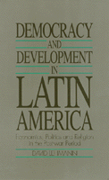

<body bgcolor="#FFFFFF" text="#000000" link="#0000FF" vlink="#CC0000" alink="#CC0000"><center><hr width="350" size="1" align="center" noshade>The integration of three considerable topics for modern Latin American history<hr width="350" size="1" align="center" noshade><p><a href="https://cdcshoppingcart.uchicago.edu/Cart/ChicagoBook.aspx?ISBN=9780877227236&&PRESS=temple" target="_top">Buy this book!</a> | <a href="https://cdcshoppingcart.uchicago.edu/Cart/Cart.aspx?PRESS=temple" target="_top">View Cart</a> | <a href="https://cdcshoppingcart.uchicago.edu/Cart/Cart.aspx?PRESS=temple" target="_top">Check Out</a></p><p></p></center><!--none//--><h1>Democracy and Development in Latin America</h1>
<H2>Economics, Politics and Religion in the Post-War Period</H2>
<h3>David Lehmann</h3>
<P>cloth 0-87722-723-3 $79.50, Jun 90, <FONT COLOR=#990033>Out of Print</FONT>
<br>paper 1-56639-011-7 $33.95, Dec 92, <FONT COLOR=#990033>Out of Print</FONT>
<BR> 272 pp
6x9
<BR>&nbsp;<br>Restricted: United States and its dependencies, the Philippine Islands and Canada.
</P><BLOCKQUOTE><I>"It is refreshing to find a book that cuts to the heart of the ideological dilemma and does so with clarity and readability.... Lehmann's excellent explanation of 'basismo' (grassroots democracy) is probably the clearest available in the English language.... This clearly written book is a must for anyone truly interested in the political, economic, and religious life of Latin America."</I>
<br>&#151<b><I>Choice</I></b><I></I></BLOCKQUOTE>
<p>In this wide-ranging history of Latin American thought since the 1930s, David Lehmann sets out to integrate three topical areas of considerable importance to the modern history of Latin America: the intellectual currents of social science; the renovation of Catholic thought and practice; and the emergence of popular social movements. Concentrating on Argentina, Brazil, and Chile, he provides an intellectual history of the past forty years and follows the fate of the generations whose ideas&#151in economics, politics, and religion&#151became the most influential in the developing world.
<p>In terms accessible to people unfamiliar with the details of modern Latin American history, Lehmann explains the origins of dependency theory, the disappointing effects of import-substitution, the rise of Liberation Theology, the nature of grassroots politics, as well as a variety of other schools of thought and the audiences to which they have been addressed. The book also offers an up-to-date analysis of the many social movements that have proliferated in Latin America, in the context of unprecedented repression and economic crisis.
<p>Lehmann concludes by distilling from these social movements and the ideologies they have inspired a non-utopian contribution to the idea of democratic development: a <I>basismo</I>, or grassroots agenda for the reinvention of civil societies on the verge of disintegration and states on the verge of bankruptcy. His book will be indispensable for anyone concerned with the politics, sociology, and economics of development.
<BR>&nbsp;<h2>Reviews</h2>
<p><I>"In this wide-ranging history of Latin American thought since the 1930s, the author sets out to integrate three topical areas: the intellectual currents of social science, the renovation of Catholic thought and practice, and the emergence of popular social movements."</I>
<br>&#151<b><I>Abstracts of Development Studies</I></b>
<p><I>"[An] important contribution to the political, economic, and religious history of Latin America since the end of the second world war.... The book is important...because of the range of knowledge, quality of analysis and subtlety of interpretation which Lehmann brings to all the topics he addresses. There is something of interest being said on every page."</I>
<br>&#151<b><I>Political Studies</I></b>
<BR>&nbsp;<h2>Contents</h2><P>
<p>Acknowledgments
<br>Introduction
<p>1. In Search of a Development Project 'of Our Own': Social and Economic Thought in Latin America from 1948 to the Apogee of Dependency Theory
<br><I>Introduction &#149
A New Era Dawns after World War Two &#149
Origins of Dependency Theory: "National" Marxism in the Inter-War Period &#149
Dependency Theory &#149
An Available Audience &#149
Conclusion</I>
<p>2. From Dependency to Democracy
<br><I>The Congruence of Corporatism and Import-Substituting Industrialization (ISI) &#149
Structuralism and Reformism: Blueprints and Popular Mobilization &#149
The Ideological Moment of the Early 1970s &#149
A New Theory of the State? &#149
Post-Marxism &#149
Ghosts of the Past: The Costs of Consensus versus the Costs of Change &#149
Neo-Conservative Politics and Neo-Liberal Economics &#149
A Populist Neo-Conservatism &#149
Conclusion</I>
<p>3. The Church Returns to Centre Stage
<br><I>Social Advance and Theological Retrenchment in Europe &#149
Lay Involvements in Latin America &#149
Paulo Freire and the Origins of </I>Basismo<I> &#149
Christian Democracy &#149
Medell�n and Puebla &#149
The Church under Authoritarian Regimes &#149
Argentina: Repression and Decay &#149
Modernity and Tradition in the Theology of Liberation &#149
The Message of the Theology of Liberation &#149
From Theological Debate to Church Renewal (Ecclesiogenesis) &#149
The Concept of the CEB in Liberation Theology &#149
The Real World of the CEBs &#149
The Bible According to the Church of the Poor &#149
Conclusions: Counter-Attack and Retrenchment in Rome</I>
<p>4. Social Movements
<br><I>Changing Themes of Social Mobilization &#149
Changing Themes of Conflict in the Countryside &#149
Alternatives to Land Reform &#149
Urban Social Movements &#149
Conclusion: the Emergence of </I>Basismo<I></I>
<p>5. <I>Basismo</I> as if Reality Really Mattered <I>or</I>Modernization from Below
<br><I></I>Basismo<I> as an Invocation &#149
</I>Basismo<I> as if Reality Really Mattered &#149
Conclusion</I>
<p>Bibliography
<br>Index
</P><BR>&nbsp;<H2>About the Author(s)</H2>
<P><b>David Lehmann</b> is Assistant Director of Development Studies at the University of Cambridge.</P>
<BR><H2>Subject Categories</H2>
<p><A HREF="/tempress/history.html" TARGET="_top">History</a>
<BR><A HREF="/tempress/latin.html" TARGET="_top">Latin American/Caribbean Studies</a>
</p>
<p align="center"><a href="https://cdcshoppingcart.uchicago.edu/Cart/ChicagoBook.aspx?ISBN=9780877227236&&PRESS=temple" target="_top">Buy this book!</a> | <a href="https://cdcshoppingcart.uchicago.edu/Cart/Cart.aspx?PRESS=temple" target="_top">View Cart</a> | <a href="https://cdcshoppingcart.uchicago.edu/Cart/Cart.aspx?PRESS=temple" target="_top">Check Out</a></p><p><font face="Arial" size="1"><a href="copyright.html" onMouseOver="window.status='Web Copyright Policy';return true;" onMouseOut="window.status=''" title="Web Copyright Policy">&copy;</a> 2015 <a href="http://www.temple.edu" target="new" onMouseOver="window.status='Link to Temple University home page';return true;" onMouseOut="window.status=''" title="Link to Temple University home page">Temple University</a>. All Rights Reserved. http://www.temple.edu/tempress/titles/783_reg.html</font></p>